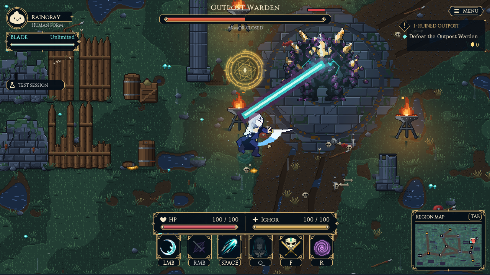
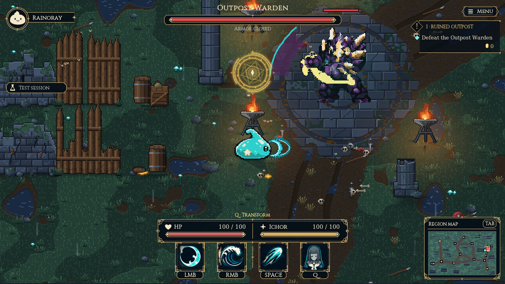

Blob to Blade · Native Guardian preview
Real attacks. A heavier Warden.
The practice window uses the actual game, original Rainoray and slime attacks, animations, parry, Void Sever and Beelzebub. Both phases run against real map collision.

Rainoray's real sword animation · Phase II core beam
Original slime attack · Phase I backhandClaude's Guardian sound pass
Armor weight and hollow resonance in phase I. Detached fists and a tearing magical core in phase II. Original procedural audio by Claude Code, Opus 5.5 at max effort.
Play the grouped audition, or compare individual cues below.
Try the actual fight
Use the separate Guardian preview game window. Press Esc to resume. Choose Human or Slime and Phase I or II with the buttons beneath it.
WASD move · LMB tap / hold, mouse aim · RMB skill · Space dash · F parry · R Beelzebub · Q transform.
Training has unlimited blade duration. Earn ultimate readiness normally; Beelzebub consumes corpses. Your campaign save and installed game are separate from this preview.
The images above are scripted fixtures from the real renderer. Human balance and speaker preference still need your play/listening pass. Earlier animation studies use simplified player shots and are archived.